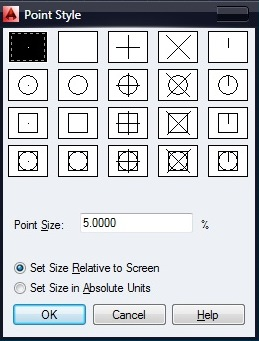
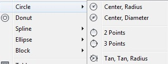
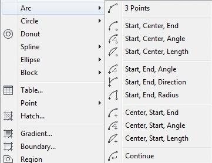
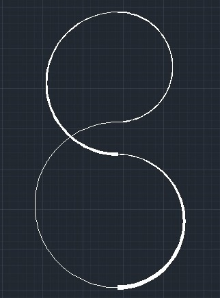
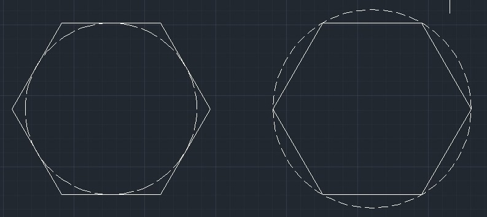
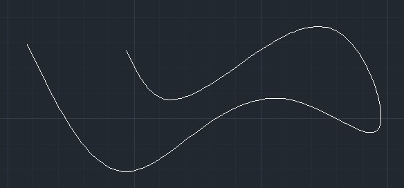
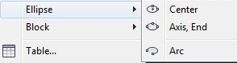

Лекция 5: Основные геометрические объекты AutoCAD.
Любой, даже самый сложный, чертеж состоит из совокупности элементарных объектов, которые можно создать при помощи одной команды. К ни принадлежат отрезки, окружности, дуги и другие графические объекты. В системе AutoCAD такие объекты называются графическими примитивами. Для размещения объекта в окне чертежа вызывается соответствующая команда, задаются координаты точек и необходимые параметры. В данном уроке мы рассмотрим команды, предназначенные для создания графических примитивов.
Точка (Point)
Способы ввода команды:
Набрать с клавиатуры команды: Point
Вызов из меню: Draw>Point
Кнопка на панели инструментов point
Ввести команду одним из приведенных способов.
Точка в окне чертежа задается координатами, которые вводятся с клавиатуры или фиксируются нажатием ЛКМ на рабочем поле в ответ на запрос системы
Current point modes: PDMODE=0 PDSIZE=0.0000
Specify a point:
Для точки можно задать размер и форму. Размер задается в абсолютных единицах или относительно размера экрана.
Тип и размер точки можно выбрать в диалоговом окне Point Style. Вызывается окно командой Format>Point Style.
Отрезок (Line)
Способы ввода команды:
Набрать с клавиатуры команды: Line
Вызов из меню: Draw>Line
Кнопка на панели инструментов Line
Для того что бы построить отрезок, необходимо указать координаты двух точек – начальной и конечной. Командой строиться одинарный отрезок или последовательность отрезков. При построении последовательности отрезков конечная точка предыдущего отрезка является начальной для следующего.
Для построения необходимо выполнить следующую последовательность:
1.Ввести команду одним из выше перечисленных способов.
2.На запрос системы Specify first point: ввести координаты начальной точки.
3.На запрос системы Specify next point or [Undo]: ввести координаты начальной точки.
4.На запрос системы Specify next point or [Undo]: выполнить одно из следующих действий:
завершить выполнение команды нажав клавишу Enter;
ввести координаты конечной точки следующего отрезка;
1.На запрос системы Specify next point or [Close/Undo]: выполнить одно из следующих действий:
ввести координаты конечной точки следующего отрезка;
завершить выполнение команды одним из следующих способов:
1.нажав клавишу Enter;
2.ввести опцию Close с клавиатуры. При этом построен отрезок, который соединяет последнюю точку с начальной точкой первого отрезка. Таким образом, построится замкнутый контур;
3.если вы не завершили выполнение команды, то пятый шаг повторяется необходимое количество раз.
Окружность (Circle)
Способы ввода команды:
Набрать с клавиатуры команды: Circle
Вызов из меню: Draw>Circle
Кнопка на панели инструментов
Окружность можно построить такими способами:
1.Указать центр окружности и размер радиуса или диаметра.
2.Указать координаты трех точек, которые лежат на окружности и не лежат на одной прямой.
3.Указать координаты двух точек, которые являются концами диаметра.
4.Построить окружность, которая касается двух ранее построенных объектов в указанных точках.
Для построения необходимо выполнить следующую последовательность:
Введите команду одним из выше перечисленных методов
На запрос системы circle Specify center point for circle or [3P/2P/Ttr (tan tan radius)]: выбрать один из способов построения окружности.
1 способ
Ввести координаты центра окружности.
На запрос системы Specify radius of circle or [Diameter]: ввести значения радиуса или опцию D.
Если ввели опцию D, появится запрос Specify diameter of circle, на которой необходимо ввести значение диаметра.
Стоит отметить что на запрос системы указать радиус или диаметр, можно указывать не соответствующее значение, а координаты точки. После чего программа самостоятельно вычислит радиус или диаметр от данной точки к центру окружности.
2 способ
Ввести опцию 3P, которая соответствует выбору способа построения окружности по трем точкам.
Далее по очереди ввести или указать координаты трех точек.
3 способ
Ввести опцию 2Р, которая соответствует выбору способа построения по конечным точкам диаметра.
Ввести или указать координаты двух точек.
4 способ
Ввести опцию Ttr. В этом случае окружность соприкасается в двух точках с объектами, построенными ранее.
Указать или ввести координаты двух точек
Ввести радиус окружности или нажать клавишу Enter. В этом случае радиус будет вычислен автоматически.
Дуга (Arc)
< Способы ввода команды: /p>
Набрать с клавиатуры команды: Arc
Вызов из меню: Draw>Arc
Кнопка на панели инструментов
Дуга строится одиннадцатью способами, которые отличаются выбором и комбинацией трех параметров:
Начало (Start) – начальная точка;
Центр (Center) – центр дуги;
Конец (End) – конечная точка;
Угол (Angle) – центральный угол;
Длинна (Chord Length) – длинна хорды;
Направление (Direction) – направление касательной (указывается одной точкой и совпадает с вектором, проведенным в эту точку из начальной точки);
Радиус (Radius) – радиус дуги;
3 Точки (3 Points) – по трем точкам лежащим на дуге;
Продолжить (Continue) – построение дуги как продолжение предыдущей линии или дуги. Начальной точкой и начальным направлением соответственно будут конечная точка и конечное направление предыдущей дуги или отрезка.
Конструкционная линия (Xline)
Способы ввода команды:
Набрать с клавиатуры команды: Xline
Вызов из меню: Draw>Construction line
Кнопка на панели инструментов xline
Конструкционная линия является лучом направленным в обе стороны от заданной точки.
Для построения необходимо выполнить следующую последовательность:
Ввести команду одним из выше перечисленных способов.
На запрос системы Command: _xline Specify a point or [Hor/Ver/Ang/Bisect/Offset]: выбрать один из способов построения:
1 способ
Ввести координаты первой точки.
Ввести координаты второй точки.
На запрос системы Specify trough point: ввести координаты точек для построения нескольких конструкционных линий, для которых начальная точка будет общей, или завершить выполнение команды нажатием клавиши ESC или ENTER.
2 способ
Ввести параметр Hor или Ver, который позволяет построить конструкционную линию параллельно оси Х или Y.
На запрос системы Specify trough point: ввести координаты точки. Продолжая указывать координаты точек на запрос Specify trough point:, можно построить несколько параллельных линий.
3 способ
Ввести параметр Ang, который позволяет построить конструкционную линию под определённым углом к оси Х или относительно указанной прямой.
На запрос системы Enter angle of xline (0) or [Reference]:
Ввести значение угла в градусах, что бы построить прямую под углом к оси Х и на запрос системы Specify through point: ввести координаты точки, через которую пройдет конструкционная линия.
Ввести параметр R, что бы построить прямую под углом к другой прямой и на запрос Select a line object: указать курсором прямолинейный объект. Далее последует запрос на указание угла (Enter angle of xline <0>:) и точки (Specify through point:), через которую пройдет линия.
4 способ
Ввести параметр Bisect, который позволяет строить биссектрису угла.
Последовательно указать точку вершины угла и стороны в ответ на запрос системы.
5 способ
Ввести параметр Offset, который позволяет построить конструкционную линию параллельную указанной линии.
Последовательно указать смещение, линию и направление смещения в ответ на запрос системы.
Луч (Ray)
Способы ввода команды:
Набрать с клавиатуры команды: Ray
Вызов из меню: Draw>Ray
Кнопка на панели инструментов ray
Луч – линия направленная из точки в бесконечность. Задается двумя точками – начальной и точкой лежащей на луче.
Полилиния (Polyline)
Способы ввода команды:
Набрать с клавиатуры команды: Pline
Вызов из меню: Draw>Polyline
Кнопка на панели инструментов pline
Полилиния состоит из последовательных соединений линий и дуговых сегментов. Каждый сегмент может иметь определенную ширину. Значение ширины в начальной точке сегмента может отличаться от значения в конечной точке.
При построении полилинии необходимо определить начальную точку в ответ на запрос системы Specify start point: Далее становятся доступными следующие параметры:
Halfwidth – Задает половину ширины сегмента полилинии в начальной и конечной точке.
Width – Задает ширину сегмента полилинии в начальной и конечной точке.
Lenght – создает сегмент полилинии заданной длинны того же направления, что и предыдущий.
Close – соединяет конечную точку полилинии с начальной, прямолинейным сегментом.
Undo – удаляется последний построенный сегмент.
В режиме построения дуги становятся доступными следующие параметры:
Angle – центральный угол;
Center – центр;
Close – соединяет конечную точку полилинии с ее началом дуговым сегментом;
Direction – направление касательной;
Line – переход в режим построения прямолинейных отрезков;
Radius – радиус дуги;
Second pt – промежуточная точка на дуге;
Полилиния, построенная командой Pline рассматривается в AutoCAD как единый объект. Редактирование полилинии производится командой PEDIT. Командой EXPLODE полилинию можно разбить на отдельные элементы. Подробней о редактировании полилиний будет описано в следующих уроках.
Многоугольник (Polygon)
Способы ввода команды:
Набрать с клавиатуры команды: Polygon
Вызов из меню: Draw>Polygon
Кнопка на панели инструментов polygon botton
Командой строится правильный многоугольник с заданным количеством сторон.
Необходимо задавать способ построения:
Многоугольник описывает (Circumscribed) окружность, для которой задается радиус;
Диалог имеет следующий вид:
Command:_polygon Enter number of sides <9>:7
Specify center of polygon or [Edge]:300,300
Enter an option [Inscribed In circle/Circumscribed about circle]
Enter an option [Inscribed In circle/Circumscribed about circle]
Многоугольник вписанный (Inscribed) в окружность, для которой задается радиус;
Диалог имеет следующий вид:
Command:_polygon Enter number of sides <7>:7
Specify center of polygon or [Edge]:300,300
Enter an option [Inscribed In circle/Circumscribed about circle]
Specify radius of circle: 50
Задается длинна стороны (Edge) и координаты конечных точек этой стороны;
Многоугольник является полилинией, потому для его редактирования можно воспользоваться тема же командами что и для редактирования полилиний.
Прямоугольник (Rectang)
Способы ввода команды:
Набрать с клавиатуры команды: Rectang
Вызов из меню: Draw>Rectang
Кнопка на панели инструментов rectang botton
Что бы построить прямоугольник, необходимо указать координаты двух диагонально противоположенных вершин.
Диалог имеет следующий вид:
Command:_rectang
Specify first corner point or [Area/Dimension/Rotation]:100,100
Specify other corner point or [Dimensions]:300,300
Параметры команды:
Area – построение прямоугольника с заданной площадью;
Dimension– построение прямоугольника заданной длинны и ширины;
Rotation– поворот прямоугольника на заданный угол относительно оси Х;
Кольцо (Donut)
Способы ввода команды:
Набрать с клавиатуры команды: Donut
Вызов из меню: Draw>Donut
Кнопка на панели инструментов donnut botton
Кольцо – часть плоскости между внешней и внутренней концентрическими окружностями. Толщина кольца равняется половине разницы диаметров этих окружностей. Кольца – сплошные заполненные объекты.
После ввода команды система выдает запрос на размер внутреннего и внешнего диаметров, а так же запрашивает положение центра кольца.
Диалог имеет следующий вид:
Specify inside diameter of donut <0.5000>:150
Specify outside diameter of donut <1.0000>:250
Specify center of donut or
Сплайн (Spline)
Способы ввода команды:
Набрать с клавиатуры команды: Spline
Вызов из меню: Draw>Spline
Кнопка на панели инструментов spline botton
Сплайн – это гладкая кривая, которая проходит через заданный набор точек. При построении сплайна учитывается положение точек и направление касательных в начальной и конечной точках.
После ввода команды система выдает запрос на ввод координат точек или введение ключа. Последние два запроса на ввод тангенсов угла наклона касательных в начальной и конечной точках.
Диалог имеет следующий вид:
Command:_spline
Specify first point or[Object]:100,200
Specify next point:310,110
Specify next point or [Close/Fit tolerance]< start tangent>:400,250
Specify next point or [Close/Fit tolerance]< start tangent>:520,180
Specify next point or [Close/Fit tolerance]< start tangent>:460,360
Specify next point or [Close/Fit tolerance]< start tangent>:580,310
Specify next point or [Close/Fit tolerance]< start tangent>:
Specify start tangent:10
Specify end tangent:20
Параметры команды:
Object – преобразование сглаженной линии в эквивалентный сплайн.
Close – замыкает кривую соединением последней точки с первой.
Fit Tolerance (Допуск) – задает точность аппроксимации сплайна. При значении 0 (По умолчанию) сплайн проходит точно через заданные точки. Чем выше значение, тем больше сплайн отклоняется от заданных точек и становится более гладким.
Эллипс (Ellipse)
Способы ввода команды:
Набрать с клавиатуры команды: Ellipse
Вызов из меню: Draw>Ellipse
Кнопка на панели инструментов
Эллипс можно построить, указав центр и радиус изометрической окружности или задав начальную и конечную точки одной оси и расстояние от центра эллипса до конца другой оси.
Ключи
Axis endpoint – конечная точка оси. При выборе данной опции (она установлена по умолчанию) задаются две конечные точки первой оси и точка, которая указывает расстояние от центра эллипса до конца другой оси.
Rotation – эллипс строится как проекция окружности, которая вращается вокруг диаметра, определенного заданными перед этим точками на плоскости чертежа. Диапазон допустимых углов ()…89,4.
Center – центр эллипса. Необходимо так же указать координаты конечной точки оси и расстояние от центра до конечной точки другой оси.
Arc — позволяет построить эллиптическую дугу.
Диалог при использовании ключа Axis endpoint:
Command:_ellipse